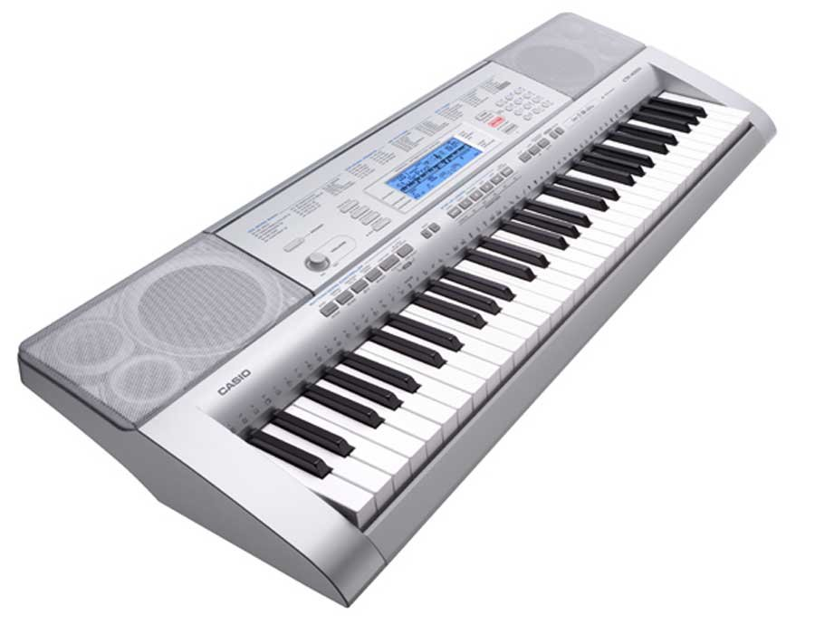

Casio CTK-860IN Arranger Keyboards
Casio CTK-860IN Specifications:
o Keyboard: 61 Piano-style keys
o Touch Response: 2 sensitivity levels, Off
o Sound Source: AHL
o Maximum Polyphony: 48
o Tones: 600 built-in tones (Including 15 Indian tones)
o Layer/Split: Layer, Split
o Digital Effects: Virtual Hall, Reverb (10 types), Chorus (5 types)
o Rhythms/Patterns: 190 built-in rhythms (Including 21 Indian rhythms)(10 user rhythms)
o Auto Accompaniment: Modes: CASIO Chord, Fingered 1, Fingered 2 (6th off), Fingered 3 (on bass), Full Range Chord
o Controllers: Start/Stop, Intro, Normal/Fill-in, Variation/Fill-in, Synchro/Ending
o Built-in Songs: 152 (Song Bank)
o Song Expansion: 10 songs maximum (up to 320KB total)
o Lesson Function: Step up lesson, Phrases, Lesson Part select, Performance evalution, Voice fingering guide (Lesson part: right hand, left hand, both hands)
o Metronome: Beats: 0, 1 - 9 (Tempo range: quarter note = 30 to 255)
o Recorder: 6 tracks x 5 songs (performance recording), 1 song (lesson recording), approximately 12,000 notes, real-time recording/playback
o Sampling Function: Maximum sampling capacity: :Up to 8 sounds, Maximum total sampling time: :Up to 10 seconds, Sampling sound input: AUDIO IN jack
o Key Transpose: 25 steps (-12 to +12 semitones)
o Tuning Control: A4 = 415.5 to 465.9 Hz (Initial Default: 440.0 Hz)
o Pedals: Standard jack (sustain, sostenuto, soft, rhythm)
o Display Screen: LCD with backlight
o SD Memory Card Slot: Supported SD memory card capacities: Up to 32GB(SDHC applicable), MAX. 999 songs / SMF (Format 0/1)*, CASIO format song playback, recorded song/CASIO format song/sampled sound/user rhythm/user scale/registration save/load, recorded song SMF format save, card format, file delete
o * Supports SMF Format 0 or Format 1 only for playback.
o MIDI: GM Compatibility: Level1, Terminals: USB
o Speakers: 12cm x 2
o Amp Output: 2.5W + 2.5W
o Input/Output Terminals: HEADPHONES/OUTPUT (standard stereo jack), SUSTAIN/DAMPER, AUDIO IN
o USB: type B*, EXTERNAL POWER (9.5V DC), * USB cable (A-B type) required to use USB terminal for computer connection.